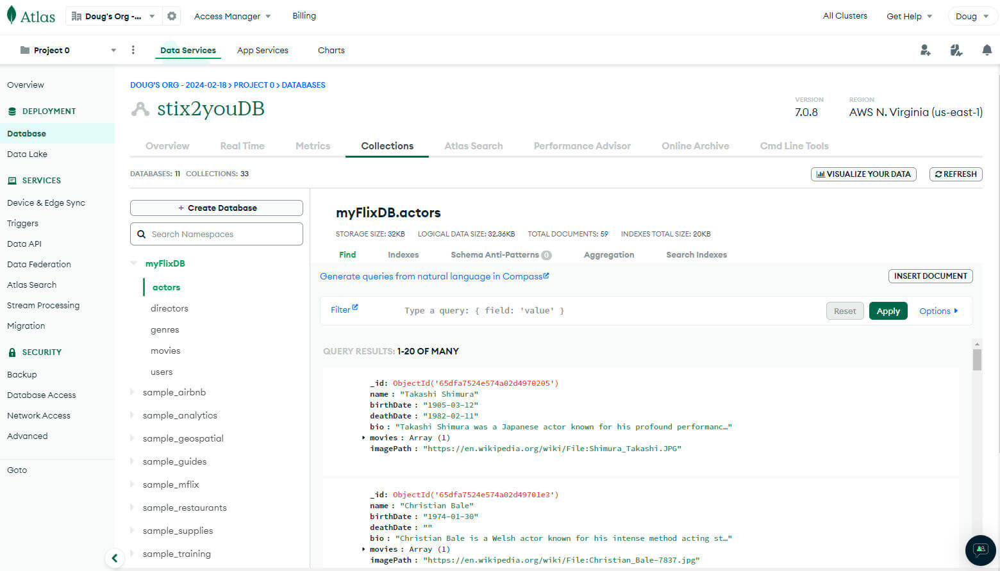
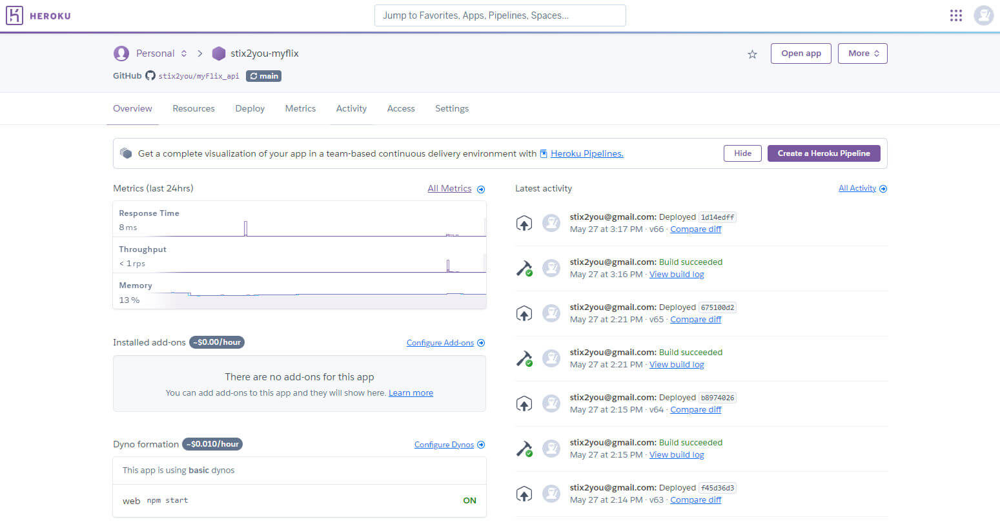
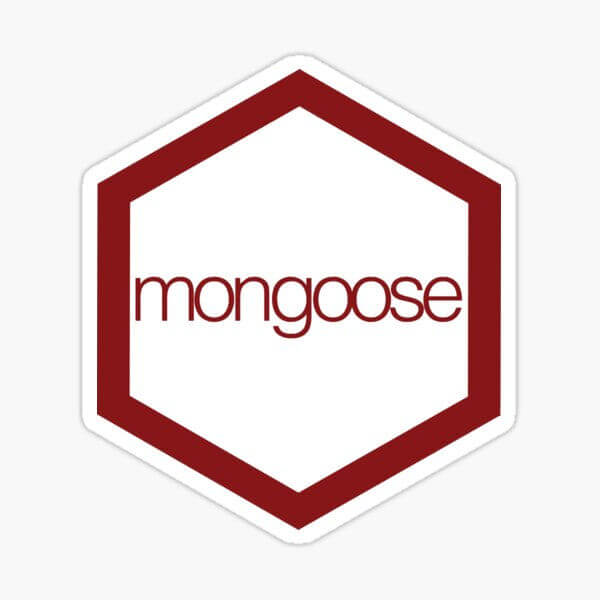
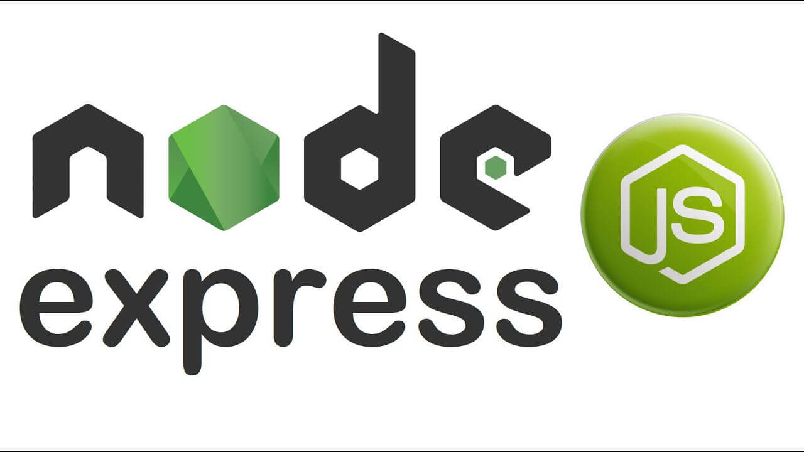
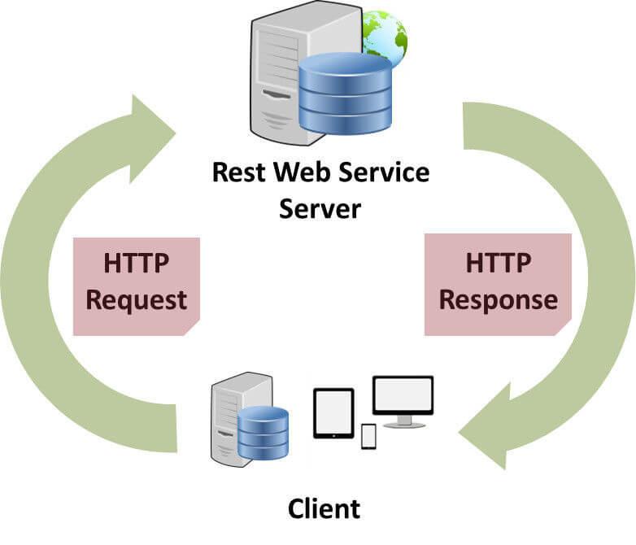

myFlix API Project
-

Overview
MyFlix API is a RESTful web service that provides movie data to the MyFlix Angular application. The API is built using Node.js, Express.js, and MongoDB, and it allows users to access information about movies, directors, and genres. The API supports user authentication, enabling users to register, log in, and manage their favorites list. By interacting with the MyFlix API, the MyFlix Angular application can display a list of movies, allow users to view movie details, and manage their favorites.
-

Purpose & Context
The need to build a RESTful web service that provides movie data to the MyFlix Angular and React applications arose from the desire to learn how to create a responsive, interactive web application that allows users to browse, search, and manage movie information. By developing the MyFlix API, I was able to demonstrate my proficiency in back-end development, user authentication, and data management. The API serves as the foundation for the MyFlix Angular application, enabling users to access movie data and personalize their viewing experience.
-
Objective
The goal of the MyFlix API project was to create a RESTful web service that provides movie data to the MyFlix Angular application. The API needed to support user authentication, enabling users to register, log in, and manage their favorites list. By interacting with the MyFlix API, the MyFlix Angular application can display a list of movies, allow users to view movie details, and manage their favorites. The API needed to be secure, scalable, and efficient, supporting CRUD operations for movie data and user authentication.
- Build a RESTful web service using Node.js, Express.js, and MongoDB
- Implement user authentication with JWT tokens
- Support CRUD operations for movie data and user favorites
- Secure API endpoints with middleware and error handling
- Deploy the API to a cloud platform like Heroku or MongoDB Atlas
-
Technology Stack Decisions
The Project Brief required the use of specific technologies to build the MyFlix API. Here are the technology stack decisions I made for the project:
MongoDB
MongoDB is a NoSQL database that stores data in flexible, JSON-like documents. By using MongoDB as the database for the MyFlix API, I was able to store movie data, user information, and favorites in a scalable, efficient manner. MongoDB's document-based data model allowed me to store complex data structures, perform fast queries, and scale horizontally as needed. By leveraging MongoDB's aggregation framework, indexing, and sharding capabilities, I was able to create a robust, high-performance database for managing movie data and user authentication.
Mongoose
Mongoose is an Object Data Modeling (ODM) library for MongoDB that provides a schema-based solution to model application data. By using Mongoose in the MyFlix API project, I was able to define data schemas, validate data, and interact with MongoDB in a more structured, efficient way. Mongoose's schema validation, middleware hooks, and query building capabilities helped me create a secure, reliable API that enforces data integrity, handles complex data operations, and integrates with Express.js seamlessly.
Node.js, Express.js
Node.js and Express.js are a powerful combination for building fast, scalable web applications. By using Node.js as the runtime environment and Express.js as the web application framework, I was able to create a RESTful API that handles HTTP requests, routes, and middleware efficiently. Node.js's event-driven, non-blocking I/O model and Express.js's minimalist, flexible design enabled me to build a lightweight, high-performance API that serves movie data, user authentication, and favorites. By leveraging Node.js's ecosystem of modules and Express.js's middleware, routing, and error handling, I was able to create a secure, efficient API that interacts with MongoDB and supports CRUD operations for movie data and user favorites.
REST Architecture
REST (Representational State Transfer) is an architectural style for designing networked applications that use HTTP methods to perform CRUD operations on resources. By following REST principles in the MyFlix API project, I was able to create a scalable, stateless web service that exposes movie data, user information, and favorites as resources. RESTful endpoints were designed to support CRUD operations for movie data and user favorites, enabling clients to interact with the API using standard HTTP methods like GET, POST, PUT, and DELETE. By following RESTful conventions for resource naming, URL structure, and response formats, I was able to create a predictable, easy-to-use API that conforms to industry best practices and standards.
-
Conclusion
Developing the MyFlix API project was a rewarding experience that allowed me to demonstrate my proficiency in back-end development, user authentication, and data management. By building a RESTful web service that provides movie data to the MyFlix Angular application, I was able to showcase my skills in Node.js, Express.js, and MongoDB. The API supports user authentication, enabling users to register, log in, and manage their favorites list. By interacting with the MyFlix API, the MyFlix Angular application can display a list of movies, allow users to view movie details, and manage their favorites. The API is secure, scalable, and efficient, supporting CRUD operations for movie data and user authentication. By deploying the API to a cloud platform like Heroku or MongoDB Atlas, I was able to create a production-ready web service that provides movie data to the MyFlix Angular application.